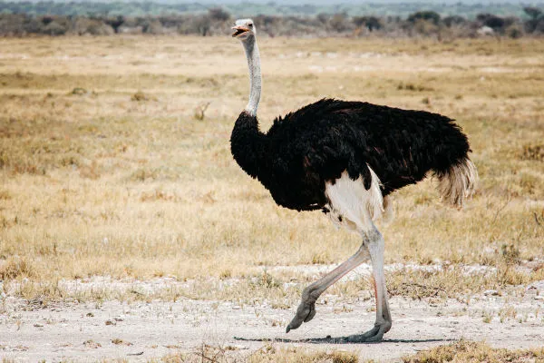

O avestruz-comum (Struthio camelus) é uma espécie de ave não voadora, originária da África. É uma das duas únicas espécies vivas da família Struthionidae, do género Struthio e da ordem das Struthioniformes, juntamente com o avestruz-somali (Struthio molybdophanes), reconhecido como uma espécie separada em 2014. O avestruz-comum é considerado a maior espécie viva de ave.
